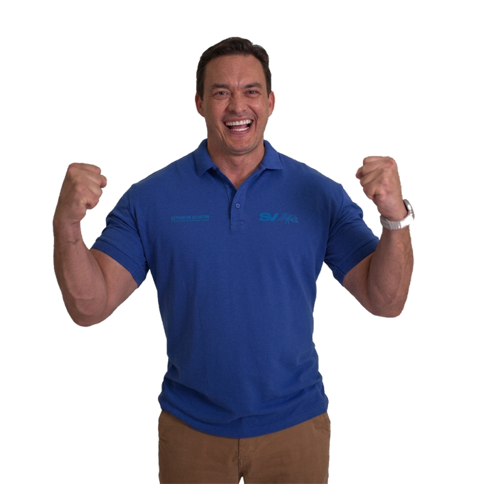
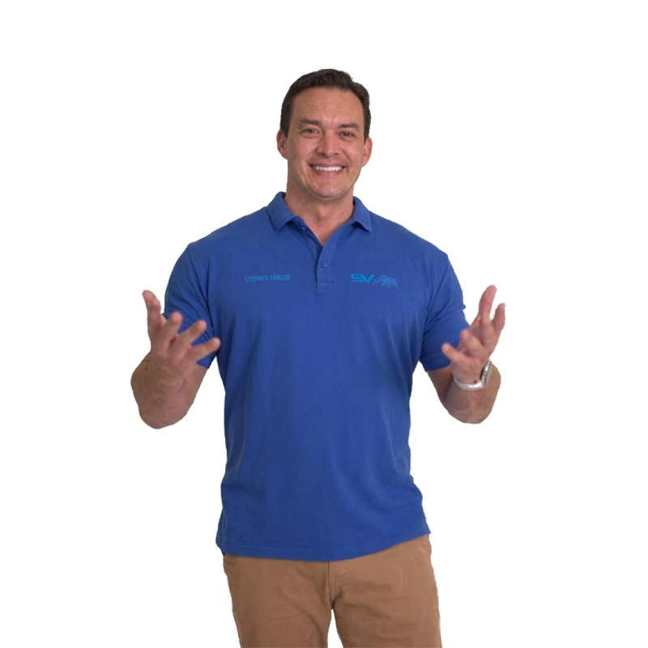

'/%3E%3C/svg%3E)
Saúde
Equipamentos para hospital regional
[MUNICÍPIO] — [REGIÃO]Recursos destinados à compra de equipamentos hospitalares, ampliando a capacidade de atendimento da região.
Senador pelo Rio Grande do Norte
Honestidade não é promessa, é prática. Fiscalização, transparência e trabalho de verdade por cada município do RN.

Transparência começa com número na mesa. Confira os resultados do mandato — e confira você mesmo nas fontes oficiais.
Emendas e indicações para o Rio Grande do Norte
Do litoral ao sertão, em todas as regiões do estado
Projetos de lei e propostas em tramitação no Senado
Hospitais e unidades entregues ou equipadas
Antes do Senado, Styvenson Valentim vestiu farda. Capitão da Polícia Militar do Rio Grande do Norte, ficou conhecido pelo trabalho duro nas operações da Lei Seca, enfrentando de frente a irresponsabilidade no trânsito e ganhando a confiança do povo potiguar pela firmeza e pela coerência.
Em 2018, essa confiança virou voto: o povo do RN levou o SV ao Senado Federal sem máquina partidária e sem dinheiro grande — com campanha simples, feita de gente. Lá, manteve o mesmo estilo: fiscalizar, denunciar privilégios e devolver parte do próprio salário.
O mandato segue os valores de sempre: honestidade, transparência total nos gastos, combate ao desperdício e presença real nos municípios. Nem todo político é ladrão — e o SV faz questão de provar isso todos os dias.
Trajetória completaEntregas reais, com endereço e destino certo. Filtre por área e veja o trabalho do TIME SV em todo o estado.
Recursos destinados à compra de equipamentos hospitalares, ampliando a capacidade de atendimento da região.
Apoio direto às forças de segurança do estado com veículos e equipamentos de proteção.
Investimento em infraestrutura escolar para garantir ambiente digno de aprendizagem.
Obras de pavimentação que encurtam distâncias e escoam a produção do interior.
Espaço de esporte e convivência para tirar a juventude da rua e formar cidadãos.
Transporte de emergência para quem mora longe dos grandes centros.
Propostas com nome, número e propósito. Clique e acompanhe a tramitação direto no portal do Senado.
Amplia a obrigação de divulgação de gastos em tempo real pelos órgãos públicos.
Em tramitaçãoFortalece os instrumentos de investigação e punição de facções criminosas.
Em tramitaçãoCria ações permanentes de prevenção e acolhimento a dependentes químicos e famílias.
AprovadoAumenta o rigor na fiscalização e nas penas para quem dirige alcoolizado.
Em tramitaçãoCorta benefícios excessivos e alinha o serviço público à realidade do trabalhador.
Em tramitaçãoGarante mais recursos e melhores condições para escolas e professores.
Em tramitaçãoO mandato é seu. Envie sua sugestão e ela será analisada pela equipe legislativa do TIME SV.
O TIME SV joga em várias frentes. Entre na que fala com você.
O que o mandato andou fazendo — direto da fonte, sem intermediário.
'/%3E%3C/svg%3E)
[Resumo em duas ou três linhas do conteúdo da notícia, escrito para gerar clique sem sensacionalismo.]
Leia mais
Todo time forte começa com gente que veste a camisa. Deixe seu contato e receba em primeira mão as novidades do mandato e da campanha — direto no seu WhatsApp.

'/%3E%3C/svg%3E)